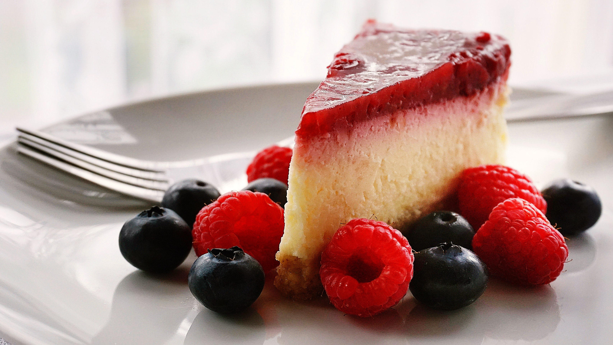

Tarta de Queso
Un clásico de la repostería, ¡reinventado!
Características: Postre
Tiempo de cocinado: 1h 30min
Al horno, Vegetariana
Ingredientes
- 600 gramos de queso crema
- 2 huevos
- Ralladura de naranja
- 1 cucharada sopera de esencia de vainilla
- 100 gramos de azúcar (½ taza)
- 1 cucharada sopera de maicena
- 250 gramos de galletitas de vainilla
- 75 gramos de manteca
- 400 gramos de mermelada de frutos rojos
Preparación
- Procesa las galletitas de vainilla hasta obtener una arenilla gruesa. Si lo deseas, puedes reemplazarlas por galletitas de coco o chocolate, ambas quedarán muy bien en esta receta.
- Luego, añade la manteca derretida y continúa procesando hasta obtener una arenilla fina y húmeda.
- Prepara el molde donde cocinarás la tarta de queso sin nata al horno. En este caso, es un molde desmontable de 24 centímetros de diámetro. Cubre la base con papel manteca y cierra bien su cintura.
- Cubre la base con el papel manteca con las galletitas molidas y, con ayuda de una espátula o cuchara, presiona para que se apelmacen en el fondo y quede bien firme. Resérvalo en la heladera.
- Mezcla el queso crema con el azúcar, la ralladura de naranja, la esencia de vainilla y la maicena. Aquí puedes hacer tantas modificaciones como desees en cuanto al sabor de la tarta de queso, reemplazando la naranja por limón, añadiendo dulce de leche o quitando la esencia de vainilla. En cuanto a la elección del queso, si es un poco más ligero, puedes batirlo previamente para que gane mayor consistencia.
- Prueba la preparación de queso y corrige el sabor si es necesario. Una vez que te haya gustado, agrega los huevos de forma individual, abriéndolos en un recipiente aparte para corroborar que están en buen estado.
- Une los ingredientes y vuelca la mezcla sobre la base de galletitas que tenías lista previamente. Protege la base y bordes de tu molde con papel aluminio y dispón tu tarta en una asadera donde entre cómodamente.
- Llévala al horno precalentado a 160 ºC y cubre hasta la mitad con agua, para cocinarlo a baño maría. Cocínalo por una hora y media, corroborando que no se termine el agua. Para asegurarte que está listo, puedes moverlo ligeramente y, si la superficie de la tarta no hace olas, es porque ha coagulado el huevo.
- Una vez cocido, retira el molde del papel aluminio y enfríalo en el refrigerador por unas 6 a 8 horas. De esta forma, estará bien frío y compacto para desmoldarlo sin problemas.
- Decora la tarta de queso sin nata al horno con la mermelada de frutos rojos sin azúcar o con azúcar. Puedes hacerla casera, de la fruta que prefieras.
Sandra González
Apasionada de los viajes, los animales y, por supuesto, la cocina. Buscando siempre caminos nuevos para sorprender a los míos.
Ver perfil